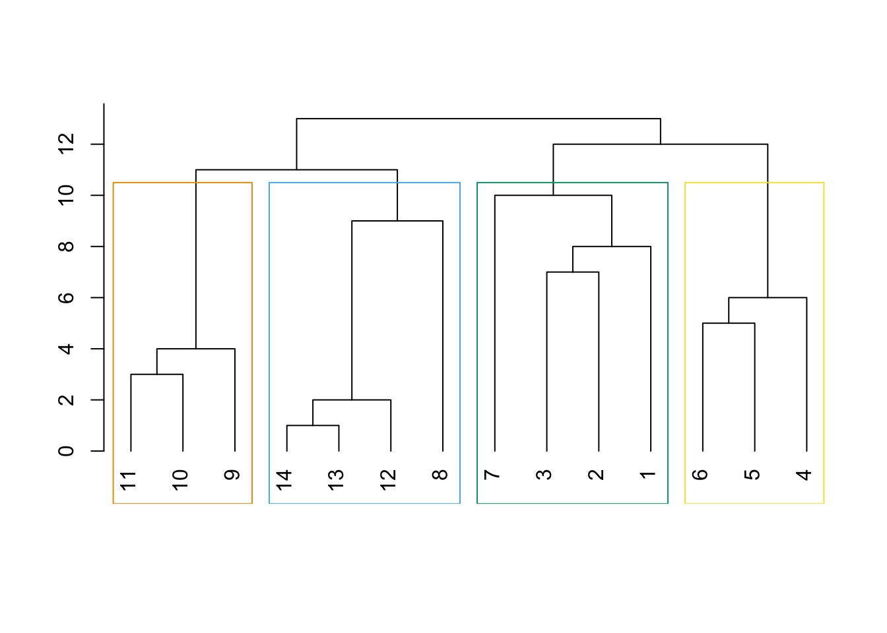

Chapitre 3 Détection de communautés : approche modularité
Une problématique souvent liée aux graphes est la détection de communautés. Elle consiste à trouver des groupes de nœuds très liés entre eux. Cette thématique est proche du clustering. Nous présentons dans cette partie les approches liées à la modularité. Cette dernière est un critère qui permet de mesurer la performance d’une partition de nœuds dans un graphe, plus la modularité est grande, meilleure est la partition.
Exercice 3.1 (Calculs de modularité) On considère le graphe suivant
G <- make_graph(c(1,2,1,3,1,4,4,5,4,6),directed = FALSE)
plot(G)
et les deux partitions des nœuds suivantes.
cl1 <- c(1,1,1,2,2,2)
cl2 <- c(1,2,1,2,1,1)Calculer la modularité pour ces deux partitions en utilisant la définition (la formule).
On peut procéder de deux façons, tout d’abord avec une approche matricielle :
m <- ecount(G) D <- degree(G) A <- as_adj(G) D1 <- as.vector(D) dd <- D1%*%t(D1)/(2*m) del1 <- matrix(rep(cl1,6),ncol=6) del2 <- matrix(rep(cl1,6),ncol=6,byrow=T) delta <- del1==del2 sum((A-dd)*delta)/(2*m) [1] 0.3del1 <- matrix(rep(cl2,6),ncol=6) del2 <- matrix(rep(cl2,6),ncol=6,byrow=T) delta <- del1==del2 sum((A-dd)*delta)/(2*m) [1] -0.32On peut également utiliser des boucles (moins efficace) :
ma_mod <- function(G,cl){ m <- ecount(G) n <- vcount(G) dd <- degree(G) res <- 0 A <- as_adj(G) for (i in 1:n){ for (j in 1:n){ if (cl[i]==cl[j]){ res <- res+(A[i,j]-dd[i]*dd[j]/(2*m)) } } } return(res/(2*m)) } ma_mod(G,cl1) [1] 0.3 ma_mod(G,cl2) [1] -0.32Retrouver ces deux valeurs avec la fonction modularity.
modularity(G,cl1) [1] 0.3 modularity(G,cl2) [1] -0.32Construire un graphe et proposer une partition avec une modularité élevée et une autre avec une modularité faible.
On propose un graphe à 8 composantes connexe avec une partition “parfaite” et une autre (très) mauvaise :
G1 <- make_full_graph(5)+make_full_graph(5)+make_full_graph(5)+make_full_graph(5)+ make_full_graph(5)+make_full_graph(5)+make_full_graph(5)+make_full_graph(5) cl1 <- c(rep(1:8,each=5)) cl2 <- rep(1:8,5)plot(G1,vertex.color=cl1)
plot(G1,vertex.color=cl2)modularity(G1,cl1) [1] 0.875 modularity(G1,cl2) [1] -0.125
Exercice 3.2 (Edge betweeness et méthode de Louvain) On considère le graphe suivant :
G1 <- make_full_graph(3)
G2 <- make_full_graph(3)
G3 <- make_full_graph(2)
G4 <- make_full_graph(3)
G5 <- make_full_graph(3)
G <- G1+G2+G3+G4+G5
G <- add.edges(G, c(6,7))
G <- add.edges(G, c(3,7))
G <- add.edges(G, c(8,9))
G <- add.edges(G, c(8,12))
plot(G)Calculer l’edge betweeness de chaque arête et identifier l’arête qui possède la plus forte valeur.
edge_betweenness(G) [1] 1 12 12 1 12 12 49 12 12 1 12 12 1 33 33 33 33C’est la 7ème arête qui possède la plus forte valeur.
Effectuer le clustering par edge betweeness et visualiser le dendrogramme. Identifier la première arête retirée.
res <- cluster_edge_betweenness(G) dendPlot(res)
C’est bien la 7ème arête qui a été retirée en premier.
Représenter les classes sur le graphe.
plot(G,vertex.color=res$membership)Couper le dendrogramme pour obtenir 3 classes. On pourra utiliser cutat.
gr3=cutat(res, no=3) plot(G, vertex.color=gr3)Comparer le résultat avec la méthode de Louvain.
set.seed(1234) res1 <- cluster_louvain(G) plot(G, vertex.color=res1$membership)Comparer les modularités obtenues.
modularity(G,res$membership) [1] 0.5657439 modularity(G,gr3) [1] 0.5034602 modularity(G,res1$membership) [1] 0.5640138Comparer avec cluster_optimal.
#res2 <- cluster_optimal(G) res2 <- cluster_fast_greedy(G) modularity(G,res2$membership) [1] 0.5640138On retrouve le même résultat que l’edge betweeness qui, sur cet exemple, maximise la modularité.
Exercice 3.3 (Communautés pour karaté et friends) Utiliser les techniques basées sur la modularité pour faire de classes sur les données karate et friends.
On commence par le karaté :
library(igraphdata)
data(karate)On a pour l’edge betweeness
clust1.eb <- cluster_edge_betweenness(karate)
dendPlot(clust1.eb)On obtient une partition en 6 classes. On maximise maintenant la modularité. Le graphe étant petit, il est possible d’être exhaustif.
#clust.opt <- cluster_optimal(karate)
clust.opt <- cluster_fast_greedy(karate)On remarquera qu’il n’est pas possible d’afficher d’afficher le dendrogramme puisque la méthode n’est pas hiérarchique ! On peut néanmoins comparer les deux partitions :
par(mfrow=c(1,2))
plot(karate,vertex.color=clust1.eb$membership)
plot(karate,vertex.color=clust.opt$membership)et calculer la modularité
modularity(karate,clust1.eb$membership)
[1] 0.3618508
modularity(karate,clust.opt$membership)
[1] 0.3990796On fait le même travail pour l’autre graphe :
friends <- read.table(file='data/Friendship-network_data_2013.csv')
amis <- graph_from_data_frame(friends,directed=F)clust1.eb <- cluster_edge_betweenness(amis)
dendPlot(clust1.eb)Le nombre de nœuds étant assez important, le clustering optimal prend trop de temps :
clust.opt <- cluster_optimal(amis)On va donc plutôt utiliser la méthode de Louvain
clust.louv <- cluster_louvain(amis)On compare les deux partitions :
par(mfrow=c(1,2))
plot(amis,vertex.color=clust1.eb$membership)
plot(amis,vertex.color=clust.louv$membership)modularity(amis,clust1.eb$membership)
[1] 0.7409451
modularity(amis,clust.louv$membership)
[1] 0.7468334